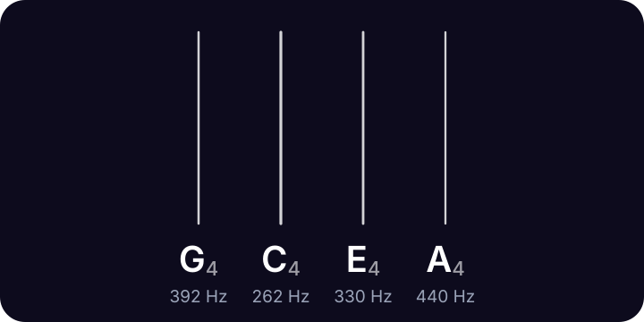

Ukulele tuner
Standard ukulele tuning is G C E A. The G is tuned high (G4), above the C, which is why a ukulele's strings don't run from low to high.
Lodestone for iPhone shows these strings too, with the one you're tuning lit up. 99¢, once.
Ukulele notes and frequencies

| String | Note | Frequency |
|---|---|---|
| 4th | G4 | 392.00 Hz |
| 3rd | C4 | 261.63 Hz |
| 2nd | E4 | 329.63 Hz |
| 1st | A4 | 440.00 Hz |
Frequencies use A4 = 440 Hz. Strings are numbered from the thinnest.
Low G ukulele: G C E A
| String | Note | Frequency |
|---|---|---|
| 4th | G3 | 196.00 Hz |
| 3rd | C4 | 261.63 Hz |
| 2nd | E4 | 329.63 Hz |
| 1st | A4 | 440.00 Hz |
Baritone ukulele: D G B E
| String | Note | Frequency |
|---|---|---|
| 4th | D3 | 146.83 Hz |
| 3rd | G3 | 196.00 Hz |
| 2nd | B3 | 246.94 Hz |
| 1st | E4 | 329.63 Hz |
Soprano, concert and tenor ukuleles all use G C E A. Some players tune the G an octave lower (low G, G3) for a deeper sound, and the baritone ukulele uses D G B E, the same as a guitar's top four strings.
The classic way to remember it is to sing My Dog Has Fleas to the four open strings.
Tuning a ukulele
- Tune the A string first (A4, 440 Hz).
- Press the E string at the 5th fret. That's an A: tune the E string until it matches the open A.
- Press the C string at the 4th fret. That's an E: tune the C string until it matches the open E.
- Press the E string at the 3rd fret. That's a G: tune the open G to match it (an octave lower for low G).
Questions
What are the ukulele string notes?
G C E A. In scientific pitch: G4, C4, E4 and A4, with the G above the C (re-entrant tuning).
Should I use high G or low G?
High G is the traditional bright ukulele sound. Low G (G3) adds a deeper bass note. Both use the same chord shapes.
How is a baritone ukulele tuned?
D G B E, the same as the top four strings of a guitar.
More tunings
- Standard E A D G B E
- Drop D D A D G B E
- Half step down E♭ A♭ D♭ G♭ B♭ E♭
- D standard D G C F A D
- Drop C C G C F A D
- DADGAD D A D G A D
- Open G D G D G B D
- Open D D A D F♯ A D
- Bass tuner E A D G
- Violin tuner G D A E
Lodestone for iPhone
Open Lodestone and play. It's already listening. Pick your instrument to see its strings, with the one you're tuning lit up. 99¢, once. No ads, no accounts, no subscription.